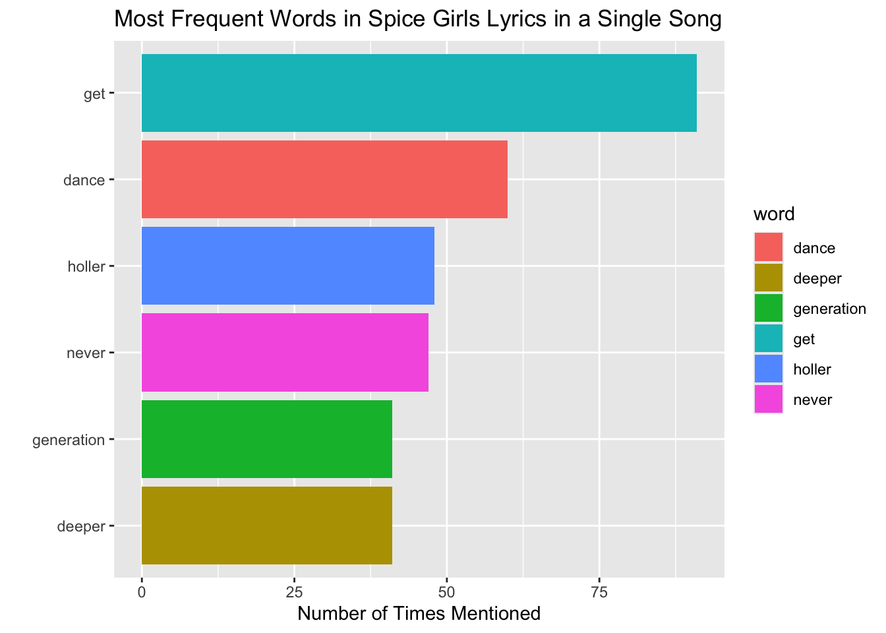
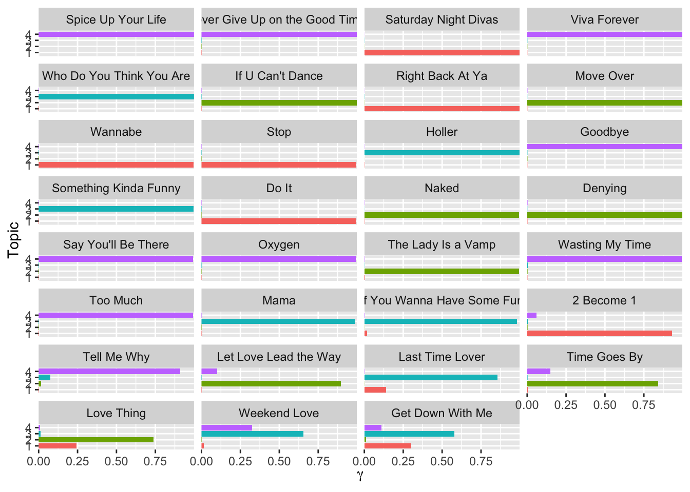

Show code
knitr::opts_chunk$set(error=FALSE,
message= FALSE,
warning=FALSE)Inspired by Julia Silge’s Topic Modeling for #TidyTuesday Spice Girls Lyrics, and Ariane Aumaitre’s, Tutorial: Text analysis and data visualization with Taylor Swift songs.
knitr::opts_chunk$set(error=FALSE,
message= FALSE,
warning=FALSE)1. Set UpFor this post I used the following packages:
tidyverse:
readr: to use read_csv()
magrittr: to pipe %>%
dplyr: to manipulate data with distinct(), mutate(), anti_join(), group_by(), summarise(), arrange(), count(), filter(), slice_max(), ungroup()
stringr: to use str_replace()
ggplot2: to make data visuals with ggplot()
tidytext: to use unnest_tokens(), get_stopwords(), cast_sparse(), tidy(), reorder_within(), scale_y_reordered()
stm: to use stm() (Structural Topic Model), and estimateEffect()
library(tidyverse)
library(tidytext)
library(stm)And looking at data of Spice Girls lyrics:
lyrics <- read_csv("https://raw.githubusercontent.com/rfordatascience/tidytuesday/master/data/2021/2021-12-14/lyrics.csv")
utils::head(lyrics, 5)# A tibble: 5 × 9
artist_name album_name track_number song_id song_name line_number section_name
<chr> <chr> <dbl> <dbl> <chr> <dbl> <chr>
1 Spice Girls Spice 1 89740 Wannabe 1 Intro
2 Spice Girls Spice 1 89740 Wannabe 2 Intro
3 Spice Girls Spice 1 89740 Wannabe 3 Intro
4 Spice Girls Spice 1 89740 Wannabe 4 Intro
5 Spice Girls Spice 1 89740 Wannabe 5 Intro
# ℹ 2 more variables: line <chr>, section_artist <chr>lyrics %>% dplyr::distinct(album_name, song_name)# A tibble: 31 × 2
album_name song_name
<chr> <chr>
1 Spice "Wannabe"
2 Spice "Say You\x92ll Be There"
3 Spice "2 Become 1"
4 Spice "Love Thing"
5 Spice "Last Time Lover"
6 Spice "Mama"
7 Spice "Who Do You Think You Are"
8 Spice "Something Kinda Funny"
9 Spice "Naked"
10 Spice "If U Can\x92t Dance"
# ℹ 21 more rows2. TidyChange \x92 to ’
Split words in line column into tokens
Anti-Join each word into it’s own row
tidy_lyrics <-
lyrics %>%
dplyr::mutate(song_name = stringr::str_replace_all(song_name, "\x92", "'")) %>%
tidytext::unnest_tokens(word, line) %>%
dplyr::anti_join(tidytext::get_stopwords())
tidy_lyrics# A tibble: 6,663 × 9
artist_name album_name track_number song_id song_name line_number
<chr> <chr> <dbl> <dbl> <chr> <dbl>
1 Spice Girls Spice 1 89740 Wannabe 1
2 Spice Girls Spice 1 89740 Wannabe 2
3 Spice Girls Spice 1 89740 Wannabe 2
4 Spice Girls Spice 1 89740 Wannabe 2
5 Spice Girls Spice 1 89740 Wannabe 2
6 Spice Girls Spice 1 89740 Wannabe 2
7 Spice Girls Spice 1 89740 Wannabe 2
8 Spice Girls Spice 1 89740 Wannabe 3
9 Spice Girls Spice 1 89740 Wannabe 3
10 Spice Girls Spice 1 89740 Wannabe 3
# ℹ 6,653 more rows
# ℹ 3 more variables: section_name <chr>, section_artist <chr>, word <chr>3. Most Common Wordstidy_lyrics %>%
dplyr::group_by(word) %>%
dplyr::summarise(n = n()) %>%
dplyr::arrange(-n)# A tibble: 979 × 2
word n
<chr> <int>
1 get 153
2 love 137
3 know 124
4 time 106
5 wanna 102
6 never 101
7 oh 88
8 yeah 88
9 la 85
10 got 82
# ℹ 969 more rowsShort Way
tidy_lyrics %>%
dplyr::count(word, sort = TRUE)# A tibble: 979 × 2
word n
<chr> <int>
1 get 153
2 love 137
3 know 124
4 time 106
5 wanna 102
6 never 101
7 oh 88
8 yeah 88
9 la 85
10 got 82
# ℹ 969 more rowstidy_lyrics %>%
dplyr::count(word, sort = TRUE) %>%
dplyr::filter(n > 80,
word != "la",
word != "oh") %>%
ggplot2::ggplot(aes(x = n, y = reorder(word, n), fill = word)) +
ggplot2::geom_col() +
ggplot2::labs(y = "",
x = "Number of Times Mentioned",
title = "Most Frequent Words in Spice Girls Lyrics")
4. Most Common Word Per Songtidy_lyrics %>%
dplyr::count(song_name, word, sort = TRUE)# A tibble: 2,206 × 3
song_name word n
<chr> <chr> <int>
1 Saturday Night Divas get 91
2 Spice Up Your Life la 64
3 If U Can't Dance dance 60
4 Holler holler 48
5 Never Give Up on the Good Times never 47
6 Move Over generation 41
7 Saturday Night Divas deeper 41
8 Move Over yeah 39
9 Something Kinda Funny got 39
10 Never Give Up on the Good Times give 38
# ℹ 2,196 more rowstidy_lyrics %>%
dplyr::count(song_name, word, sort = TRUE) %>%
dplyr::filter(n >40,
word != "la") %>%
ggplot2::ggplot(aes(x = n, y = reorder(word, n), fill = word)) +
ggplot2::geom_col() +
ggplot2::labs(y = "",
x = "Number of Times Mentioned",
title = "Most Frequent Words in Spice Girls Lyrics in a Single Song") 
5. Train a Topic Model(Analyze text data to determine cluster words)
lyrics_sparse <-
tidy_lyrics %>%
dplyr::count(song_name, word) %>%
tidytext::cast_sparse(song_name, word, n)
base::dim(lyrics_sparse)[1] 31 979This means there are 31 songs (i.e. documents) and 979 different tokens (i.e. terms or words) in our data set for modeling.
“The most important parameter when training a topic modeling is K, the number of topics. This is like k in k-means in that it is a hyper parameter of the model and we must choose this value ahead of time. We could try to multiple different values to find the best value for K, but this is a very small data set so let’s just stick with K = 4.”
base::set.seed(123)
topic_model <- stm::stm(lyrics_sparse, K = 4, verbose = FALSE)
base::summary(topic_model)A topic model with 4 topics, 31 documents and a 979 word dictionary.Topic 1 Top Words:
Highest Prob: get, wanna, deeper, right, night, come, gotta
FREX: deeper, saturday, get, comin, back, night, ya
Lift: breaking, might, reasons, brand, jump, party's, pretend
Score: deeper, saturday, get, night, comin, arms, wanna
Topic 2 Top Words:
Highest Prob: dance, yeah, know, generation, next, love, naked
FREX: next, naked, denying, foolin, nobody, wants, lead
Lift: admit, bein, check, d'ya, defeat, denying, else
Score: next, dance, naked, generation, denying, colour, foolin
Topic 3 Top Words:
Highest Prob: got, holler, make, love, wanna, oh, time
FREX: holler, kinda, swing, funny, yay, use, driving
Lift: 2000, anyone, anything, bottom, driving, fantasy, hesitate
Score: holler, swing, kinda, funny, yay, ashamed, loving
Topic 4 Top Words:
Highest Prob: la, never, love, give, time, know, way
FREX: times, swear, la, bring, promise, viva, tried
Lift: able, certain, love's, rely, affection, shy, replace
Score: la, times, aha, swear, chicas, front, havin 6. Explore Topic Model Resultsword_topics <- tidytext::tidy(topic_model, matrix = "beta")
word_topics # A tibble: 3,916 × 3
topic term beta
<int> <chr> <dbl>
1 1 achieve 1.94e- 3
2 2 achieve 8.51e-29
3 3 achieve 1.00e-25
4 4 achieve 9.51e-19
5 1 baby 1.38e- 2
6 2 baby 1.44e- 2
7 3 baby 1.28e- 3
8 4 baby 4.16e- 3
9 1 back 2.31e- 2
10 2 back 5.44e- 4
# ℹ 3,906 more rows7. Visualizationword_topics %>%
dplyr::group_by(topic) %>%
dplyr::slice_max(beta, n = 10) %>%
dplyr::ungroup() %>%
dplyr::mutate(topic = paste("Topic", topic)) %>%
ggplot2::ggplot(ggplot2::aes(beta,
tidytext::reorder_within(term,
beta,
topic),
fill = topic)) +
ggplot2::geom_col(show.legend = FALSE) +
ggplot2::facet_wrap(vars(topic), scales = "free_y") +
ggplot2::scale_x_continuous(expand = c(0, 0)) +
tidytext::scale_y_reordered() +
ggplot2::labs(x = base::expression(beta), y = NULL)
Gamma Matrixsong_topics <- tidytext::tidy(topic_model,
matrix = "gamma",
document_names = base::rownames(lyrics_sparse)
)
song_topics# A tibble: 124 × 3
document topic gamma
<chr> <int> <dbl>
1 2 Become 1 1 0.932
2 Denying 1 0.00154
3 Do It 1 0.996
4 Get Down With Me 1 0.300
5 Goodbye 1 0.000971
6 Holler 1 0.00155
7 If U Can't Dance 1 0.000896
8 If You Wanna Have Some Fun 1 0.0171
9 Last Time Lover 1 0.140
10 Let Love Lead the Way 1 0.00178
# ℹ 114 more rowssong_topics %>%
dplyr::mutate(
song_name = fct_reorder(document, gamma),
topic = base::factor(topic)
) %>%
ggplot2::ggplot(ggplot2::aes(gamma, topic, fill = topic)) +
ggplot2::geom_col(show.legend = FALSE) +
ggplot2::facet_wrap(vars(song_name), ncol = 4) +
ggplot2::scale_x_continuous(expand = c(0, 0)) +
ggplot2::labs(x = base::expression(gamma), y = "Topic")
8. Estimate Regressioneffects <-
stm::estimateEffect(
1:4 ~ album_name,
topic_model,
tidy_lyrics %>% distinct(song_name, album_name) %>% dplyr::arrange(song_name)
)
base::summary(effects)
Call:
stm::estimateEffect(formula = 1:4 ~ album_name, stmobj = topic_model,
metadata = tidy_lyrics %>% distinct(song_name, album_name) %>%
dplyr::arrange(song_name))
Topic 1:
Coefficients:
Estimate Std. Error t value Pr(>|t|)
(Intercept) 0.14061 0.12301 1.143 0.263
album_nameSpice 0.09258 0.17701 0.523 0.605
album_nameSpiceworld 0.15105 0.17327 0.872 0.391
Topic 2:
Coefficients:
Estimate Std. Error t value Pr(>|t|)
(Intercept) 0.1471 0.1327 1.109 0.277
album_nameSpice 0.1327 0.1887 0.703 0.488
album_nameSpiceworld 0.1472 0.1851 0.795 0.433
Topic 3:
Coefficients:
Estimate Std. Error t value Pr(>|t|)
(Intercept) 0.29480 0.12114 2.434 0.0216 *
album_nameSpice 0.07952 0.17174 0.463 0.6470
album_nameSpiceworld -0.28112 0.16919 -1.662 0.1078
---
Signif. codes: 0 '***' 0.001 '**' 0.01 '*' 0.05 '.' 0.1 ' ' 1
Topic 4:
Coefficients:
Estimate Std. Error t value Pr(>|t|)
(Intercept) 0.41760 0.13938 2.996 0.00567 **
album_nameSpice -0.30293 0.19793 -1.531 0.13711
album_nameSpiceworld -0.01948 0.19352 -0.101 0.92053
---
Signif. codes: 0 '***' 0.001 '**' 0.01 '*' 0.05 '.' 0.1 ' ' 1